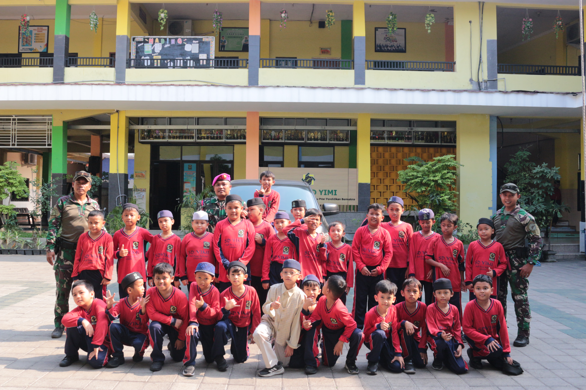

Akademik dan Nilai Keislaman
Pembelajaran akademik berjalan bersama pendidikan agama, dengan sistem Full Day School: Senin–Kamis pukul 07:00–15:30 WIB dan Jumat pukul 07:00–10:30 WIB.
Kenali program pendidikan SD YIMI Gresik yang memadukan pembelajaran akademik dengan penanaman nilai-nilai keislaman untuk mendampingi tumbuh kembang putra-putri Anda. Cari sekolah dasar Islam di Gresik? Tanyakan pendaftaran langsung kepada panitia PMB.

Lima hal yang menjadi dasar pendidikan di SD YIMI Gresik, disusun dari program yang tercantum di website resmi sekolah.
Pembelajaran akademik berjalan bersama pendidikan agama, dengan sistem Full Day School: Senin–Kamis pukul 07:00–15:30 WIB dan Jumat pukul 07:00–10:30 WIB.
Panduan Anak Sholeh (PAS), shalat berjamaah, dan pembinaan akhlak setiap pagi untuk membentuk kebiasaan baik.
Belajar Al-Qur’an melalui aplikasi, TPQ, dan Tahfidz dengan metode tarjamah gerak yang bermuara pada hafalan Al-Qur’an, ditambah murottal setiap pagi.
Penelusuran bakat dan minat siswa, ditunjang berbagai ekstrakurikuler dan kegiatan di luar kelas.
Service Learning dan program penunjang melatih siswa peduli sesama, mandiri, dan bertanggung jawab.
Gambaran program pendidikan SD YIMI. Untuk rincian terbaru, silakan tanyakan kepada panitia PMB.
Pembelajaran Full Day School pada Senin–Kamis pukul 07:00–15:30 WIB dan Jumat pukul 07:00–10:30 WIB, termasuk program up grading untuk ketuntasan belajar membaca, menulis, dan berhitung (calistung).
Panduan Anak Sholeh (PAS) untuk mengembangkan pikiran, perilaku, dan kepribadian mulia, serta pembinaan akhlak setiap pagi.
Belajar Al-Qur’an melalui aplikasi, TPQ, dan Tahfidz dengan metode tarjamah gerak yang bermuara pada hafalan Al-Qur’an, serta pembinaan murottal setiap pagi.
Shalat dhuha, dhuhur, dan ashar berjamaah, serta kegiatan spiritual seperti muhasabah dan khotmil Qur’an.
Environment Learning (belajar di luar kelas), Service Learning, study wisata, serta ekstrakurikuler seperti renang, pramuka, taekwondo, dan percakapan bahasa Inggris dan Arab.
Program lengkap dapat dilihat di halaman resmi SD YIMI Gresik.
Dokumentasi kegiatan SD YIMI Gresik dari website resmi sekolah.



Lihat kegiatan lainnya di album foto SD YIMI Gresik dan berita YIMI Update.
Jadwal, biaya, persyaratan, dan prosedur pendaftaran dapat berubah. Pastikan Anda mengonfirmasinya langsung kepada pihak sekolah.
Kirim pesan melalui WhatsApp kepada Ustadzah Nina.
Ceritakan kebutuhan dan rencana pendidikan putra-putri Anda.
Tanyakan persyaratan, jadwal, biaya, dan prosedur pendaftaran.
Ikuti petunjuk dari panitia PMB SD YIMI Gresik.
Hubungi panitia PMB melalui WhatsApp Ustadzah Nina dengan menekan tombol “Info PMB / Daftar” atau mengisi formulir pertanyaan di halaman ini. Pesan akan terbuka otomatis di WhatsApp Anda.
Persyaratan pendaftaran ditetapkan oleh sekolah dan dapat diperbarui. Silakan tanyakan persyaratan terbaru kepada panitia PMB melalui WhatsApp.
Rincian biaya dan tahap pembayaran disampaikan oleh panitia PMB. Tanyakan informasi biaya terbaru agar Anda mendapatkan data yang akurat.
Jadwal pendaftaran dapat berubah dari waktu ke waktu. Silakan konfirmasi jadwal terbaru kepada panitia PMB melalui WhatsApp.
Ringkasan program tersedia di bagian “Belajar, Bertumbuh, dan Mengembangkan Potensi” pada halaman ini. Program lengkap juga dapat dilihat di halaman resmi SD YIMI Gresik, atau Anda dapat bertanya langsung kepada panitia.
Panitia PMB SD YIMI Gresik, yaitu Ustadzah Nina, melalui WhatsApp 0881-0365-17460.
Masih memiliki pertanyaan tentang PMB SD YIMI Gresik? Sampaikan kebutuhan Anda kepada Ustadzah Nina melalui WhatsApp.
Hubungi panitia PMB untuk mendapatkan informasi resmi tentang program pendidikan dan proses penerimaan murid baru.